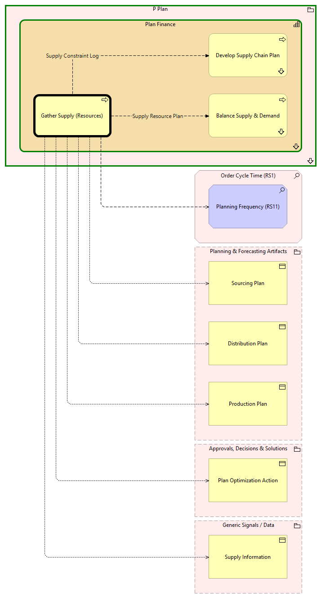

Gather Supply (Resources) - Context
(
)

generated_by
build_archi_xml.py::gen_proc_node_context_view
generator_path
pedro/capabilities/build_archi_xml_assign/build_archi_xml_assign.py
run_at
2026-10-19T21:03:52
view_type
process_context
P Plan
Plan Finance
Balance Supply & Demand
Balance Supply & Demand - Context
Develop Supply Chain Plan
Develop Supply Chain Plan - Context
Gather Supply (Resources)
Plan Finance - Processes
P Plan - Processes
Order Cycle Time (RS1)
Planning Frequency (RS11)
Planning & Forecasting Artifacts
Production Plan
Distribution Plan
Sourcing Plan
Approvals, Decisions & Solutions
Plan Optimization Action
Generic Signals / Data
Supply Information
Supply Resource Plan
Gather Supply (Resources)
Balance Supply & Demand
Supply Constraint Log
Gather Supply (Resources)
Develop Supply Chain Plan
Gather Supply (Resources)
Planning Frequency (RS11)
Gather Supply (Resources)
Production Plan
Gather Supply (Resources)
Distribution Plan
Gather Supply (Resources)
Plan Optimization Action
Gather Supply (Resources)
Sourcing Plan
Gather Supply (Resources)
Supply Information